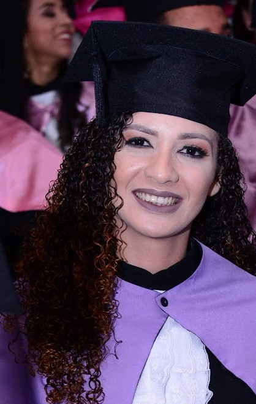

Miriam Lenzi Souza
Perfil
Miriam Lenzi Souza Possui graduação em Pedagogia pela Universidade Norte do Paraná (2018) e segunda licenciatura em Letras - Língua Portuguesa pelo Centro Universitário Leonardo da Vinci (UNIASSELVI).
Principais Competências
- Conhecimento em Planejamento Educacional,Gestão Escolar,Educação Especial,Educação Infantil.
- Letramento Matemático
Formação Acadêmica
- 2022
Graduação em andamento em análise e desenvolvimento de sistemas.
Instituto Federal de Educação Ciência e Tecnologia de Rondônia, IFRO, Brasil.
2020
Graduação em andamento em Letras- Língua portuguesa.
Centro Universitário Leonardo da Vinci, UNIASSELVI, Brasil.
- 2018
Especialização em Docência do Ensino Superior. (Carga Horária: 360h).
Universidade Pitágoras, UNOPAR, Brasil.
2014 - 2018
Graduação em Pedagogia.
Universidade Norte do Paraná, UNOPAR, Brasil.
Título: A CONTAÇÃO DE HISTÓRIAS E SUA INFLUÊNCIA PARA A APRENDIZAGEM NA EDUCAÇÃO INFANTIL..
Orientador: Maria Clara Piazza Bergamini.
Experiência Profissional
- Secretaria Municipal de Educação, SEMED, Brasil.
- SERVIÇO SOCIAL DO COMÉRCIO- RONDÔNIA, SESC, Brasil.
- CMEI Olivia Heiderich de Brito, CMEI, Brasil.
- Serviço Social do Comércio - Administração Regional no Estado de Rondônia, SESC, Brasil.
Contato
Email: lenzi_miriam@hotmail.com